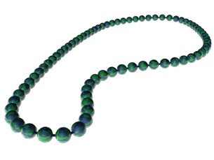
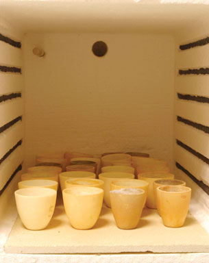

Module 6—Stoichiometry
 Try This
Try This
Testing any predictions made using the stoichiometric method involves performing an experiment and comparing the prediction with the measurable quantity (result) obtained. In the following activities you will test the stoichiometric method using gravimetric analysis.
In the pre-lab component you will calculate the expected result for the experiment. Following the pre-lab, you will use a virtual lab investigation to perform an experiment. Part of your analysis of the investigation will require you to determine a percentage difference between the predicted and observed mass of product. For the purpose of this investigation and the equipment used, a percentage difference of less than 5% would support the hypothesis that predictions made using the stoichiometric method are supported by experimental evidence.

© Schaefer Elvira/shutterstock
Pre-lab: Decomposition of Malachite
Malachite is commonly used in jewellery. Malachite can react when heated. In this investigation you will heat malachite to test whether the predictions made using the stoichiometric method are confirmed by experimental data.
Note: The correct chemical formula for malachite is Cu(OH)2CuCO3(s), not what is stated in your textbook on page 288. The reaction of malachite when exposed to heat is as follows:
Cu(OH)2CuCO3(s) → 2CuO(s) + CO2(g) + H2O(g)

© Paul Hebditch/iStockphoto
Predict the mass of copper(II) oxide that will remain if 2.00 g of malachite undergoes decomposition when heated.
Record and save your prediction. It will be required in your assignment.